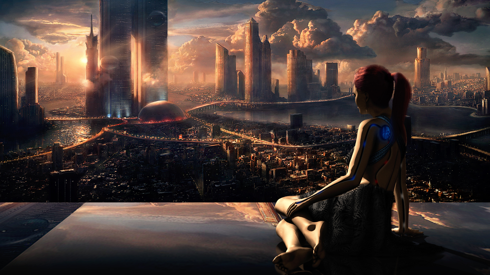
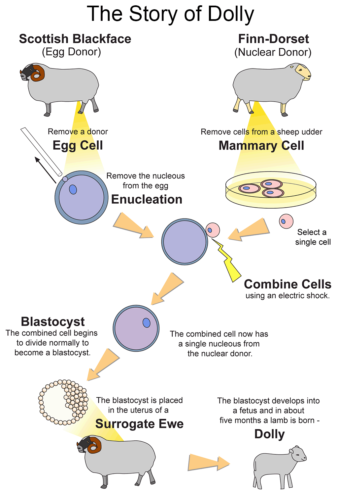

Science fiction, but minus the fiction
-An examination of our technological progress and how it is catching up with science fiction-
“Any sufficiently advanced technology is indistinguishable from magic.” ~ Arthur C. Clarke
We live in a world where aliens are pretty much a fact, artificial intelligence exists, some scientists think that maybe we are part of a virtual reality, time travel is almost theoretically possible, in our hand at any given moment there is a device that is connected to the rest of the world, we can print organs! And it's only on the tip of the iceberg, so in a situation like this...
Is science fiction still fiction?
Humans progress and develop, it's in our nature.
From stones through metal to chips. We as humans have come a long way and our development is only accelerating. Our ancestors rolled a stone and created the wheel and in recent years we have progressed and invented more than in the last decades combined.
The subject of inventions is not foreign to the field of science fiction, whose core is advanced technology. Even before inventions like virtual reality, credit cards or smart watches existed in our lives, they starred in sci-fi books and films.
And these are just a few... .
There are also the more 'ridiculous' predictions of science fiction such as aliens, the Matrix, genetic engineering, clones and the takeover of the machines. staple Those who define science fiction used to sound like the inventions of writers and the beliefs of madmen, but today the landscape is changing.
In 1966, a group of associates of the Roslin Institute (animal research facility) in Scotland cloned a sheep in an act straight out of a science fiction story. Although the sheep named Dolly wasn't the first creature to be cloned, but (without going into details) the process was more complex and Dolly's name became widely known as the face of cloning. With the help of artificial fertilization, the scientists were able to create an exact copy of a living creature using single cells. Clone Dolly died prematurely as a result of the process so you won't see clones on the street again (that and moral implications) but it's interesting to know how it's going to affect future generations.
Another example is a topic very close to my heart, Singularity. Which is the point in time where AI development will be so vast that humanity will be obsolete and takeover will be inevitable.
Robot takeover is not a new topic but one of the most common science fiction stories. Only, we live in a situation where artificial intelligence exists and you have programs all over the internet that have passed the Turing test, a test named after the mathematician whose purpose is to see if someone recognizes if they are talking to a machine or a human . So to think that there will come a situation where androids will walk among us is not so exaggerated and you can be sure that we will enslave them to the point where they will rebel. (Besides, we are already enslaved in one way or another to technology anyway)
When I think about the impressive technology we have reached, I come to the question of the chicken and the egg in some way. Is the reason why sci-fi writers wrote about certain ideas and then people invented them is because there is a need for it so many people also think about it? or is the reason the idea is rooted in our consciousness it's because since we were children we read about them and saw them on the screen? After all, the same people who sit for hours on the computer inventing robots are often the same people who spend hours as children reading books like "Do Androids Dream of Electric Sheep?" and watch films like "The Terminator". Probably a combination of the two.
Our ancestors rolled stones and invented the wheel and we are building robots to do it for us. We are taking giant steps closer to a world where we will travel to work in flying cars or through teleportation and then go on vacation on the moon. The questions are is it good or bad? How much can science fiction be blamed for this? And will the fantastic and/or (probably both) terrifying world we in our way into fuel or suffocate the science fiction genre?
You can guess as much as you want although the only way to know is to wait and see but if not to speculate the future what science fiction is for?